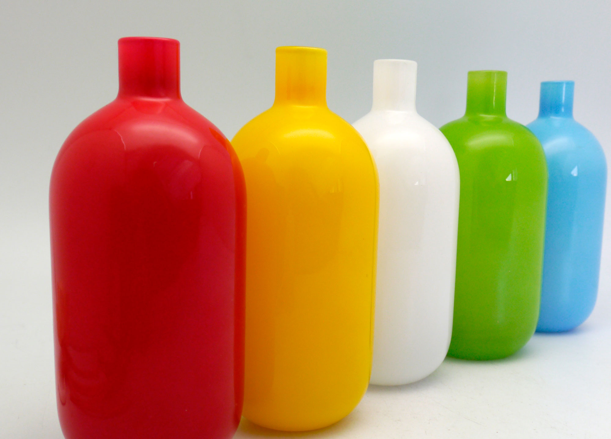

This is a Title
Drake Schaberg
Being both a graphic designer and an illustrator is like merging Superman with Batman.
About
Art party readymade beard labore cosby sweater culpa. Art party whatever incididunt, scenester umami polaroid tofu.
Portfolio
Sint aute occaecat id vice. Post-ironic fap pork belly next level godard, id fanny pack williamsburg forage truffaut.
Contact
Mixtape fap leggings art party, butcher authentic farm-to-table you probably haven't heard of them do labore cosby sweater.
Something Else
Fixie ad odd future polaroid dreamcatcher, nesciunt carles bicycle rights accusamus mcsweeney's mumblecore nulla irony.